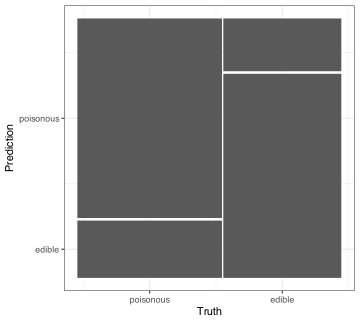
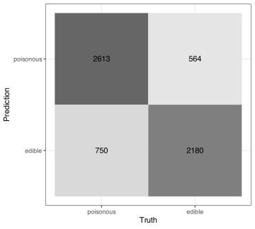

# skip: fmt
req_pkg <- c("betacal", "discrim", "desirability2", "klaR", "mgcv", "patchwork",
"probably", "rpart", "tidymodels")
# Check to see if they are installed:
pkg_installed <- vapply(req_pkg, rlang::is_installed, logical(1))
# Install missing packages:
if ( any(!pkg_installed) ) {
install_list <- names(pkg_installed)[!pkg_installed]
pak::pak(install_list)
}15 Characterizing Classification Models
This chapter describes how to compute performance metrics using tidymodels and will focus on the yardstick package.
15.1 Requirements
You’ll need 9 packages (betacal, discrim, desirability2, klaR, mgcv, patchwork, probably, rpart, tidymodels) for this chapter:
Let’s load the meta package and manage some between-package function conflicts.
library(tidymodels) # <- includes yardstick
library(discrim)
library(probably)
library(desirability2)
library(patchwork)
tidymodels_prefer()
theme_set(theme_bw())15.2 Metric Functions
For tidymodels, functions to compute performance metrics are largely in the yardstick package. For classification models, the functions come in two forms: “class” metrics (for hard class predictions) and “probability” metrics that take class probability estimates as inputs. For example:
accuracy
#> A class metric | direction: maximize
roc_auc
#> A probability metric | direction: maximizeClass metrics take inputs:
-
data: the data containing predictions placed first for compatibility with the pipe operator. -
truth: a factor column name (unquoted) indatathat has the true class labels. -
estimate: another factor column indatathat has the same levels astruth. We usually name this argument when calling metric functions.
For example, for the positive predictive value:
# example data:
two_class_example |> str()
#> 'data.frame': 500 obs. of 4 variables:
#> $ truth : Factor w/ 2 levels "Class1","Class2": 2 1 2 1 2 1 1 1 2 2 ...
#> $ Class1 : num 0.00359 0.67862 0.11089 0.73516 0.01624 ...
#> $ Class2 : num 0.996 0.321 0.889 0.265 0.984 ...
#> $ predicted: Factor w/ 2 levels "Class1","Class2": 2 1 2 1 2 1 1 1 2 2 ...
two_class_example |> ppv(truth, estimate = predicted)
#> # A tibble: 1 × 3
#> .metric .estimator .estimate
#> <chr> <chr> <dbl>
#> 1 ppv binary 0.8195The .estimator column gives some information on the type of computation that was done. For this example, it is a simple proportion of binary data (we’ll see other types of estimates below).
For probability metrics, we don’t need the estimate argument. Instead, these functions require column names that contain the probability estimates for the classes (in the same order as the factor levels). There is no argument name for these, and they are captured by the ....
For example, to compute the area under the precision-recall curve:
levels(two_class_example$truth)
#> [1] "Class1" "Class2"
two_class_example |> pr_auc(truth, Class1)
#> # A tibble: 1 × 3
#> .metric .estimator .estimate
#> <chr> <chr> <dbl>
#> 1 pr_auc binary 0.9464This example has two classes, so only the probability estimate for the first class levels is required. For 3+ classes, all of the probability columns are required.
For metrics associated with curves (e.g., ROC), there are also functions that end in _curve that you can use to get the entire curve.
Metric functions are also “group-aware” so that you can get statistics for an arbitrary number of subgroups:
two_class_example |>
mutate(group = rep(letters[1:4], each = 125)) |>
group_by(group) |>
pr_auc(truth, Class1)
#> # A tibble: 4 × 4
#> group .metric .estimator .estimate
#> <chr> <chr> <chr> <dbl>
#> 1 a pr_auc binary 0.9460
#> 2 b pr_auc binary 0.9495
#> 3 c pr_auc binary 0.9367
#> 4 d pr_auc binary 0.9618Finally, metric functions have an argument called case_weights that can be used to weight individual observations. Currently, tidymodels supports two types of case weights:
-
importance_weights()are weights (in the form of a double precision number) that are used during preprocessing and model training but are not used when computing performance. -
frequency_weights()are integer weights that indicate how many times each row appears in the data. They are used during model development as well as performance estimation.
The yardstick functions accept these types of case weights but can also take basic numeric vectors.
15.3 Metric Sets
Metrics sets are functions to compute multiple metrics, perhaps of different types, at once. The metric_set() function takes metric names as inputs and produces a function that you can use. For example:
cls_mtr <- metric_set(roc_auc, brier_class, sensitivity, specificity)
cls_mtr
#> A metric set, consisting of:
#> - `roc_auc()`, a probability metric | direction: maximize
#> - `brier_class()`, a probability metric | direction: minimize
#> - `sensitivity()`, a class metric | direction: maximize
#> - `specificity()`, a class metric | direction: maximizeSince it contains both types of classification metrics, we need to use the estimate argument as well as the ... to pass class probability columns:
two_class_example |> cls_mtr(truth, estimate = predicted, Class1)
#> # A tibble: 4 × 3
#> .metric .estimator .estimate
#> <chr> <chr> <dbl>
#> 1 sensitivity binary 0.8798
#> 2 specificity binary 0.7934
#> 3 roc_auc binary 0.9393
#> 4 brier_class binary 0.1056You can mix metric types within the same model mode. You can’t mix between modes:
metric_set(rmse, accuracy)
#> Error in `metric_set()`:
#> ✖ The combination of metric functions must be:
#> • only numeric metrics.
#> • a mix of class metrics and class probability metrics.
#> • a mix of dynamic and static survival metrics.
#> ℹ The following metric function types are being mixed:
#> - numeric (rmse)
#> - class (accuracy)The order of the metrics in a metric set does not change the computations. However, some optimization methods use a single metric to guide model tuning (e.g., Bayesian optimization). For those functions, the first metric listed in the metric set is used for the optimization.
Now let’s use the mushroom data to demonstrate the nuances of these functions.
15.4 Example Data: Poisonous Mushrooms
These data are available from the UCI ML Database in a zip file. For the analysis here, the code used to prepare the data is in the main GitHub repository (setup_mushrooms.R). We’ll load the file that contains the final data objects below.
It is worth discussing that, for these data, there is enough data to do a four-way split: training, validation, calibration, and testing sets. To do this, an initial validation split was used to produce three data sets, then an additional split was used to create the final test set and save some data for calibration. Here’s what that looks like:
# Make a three-way split into train/validation/"test" where "test" will have
# rows for the calibration data and the actual test data
# In the end, we want the proportions to be 70% for training and 10% for the
# others data sets. The initial split does 70% for training, 10% for validation,
# and 20% for testing. That 20% will be split below (evenly) to make 10% sized
# training and calibration data sets.
set.seed(669)
shroom_split <- initial_validation_split(mushroom_secondary, prop = c(.7, .1))
shroom_train <- training(shroom_split)
shroom_val <- validation(shroom_split)
shroom_rs <- validation_set(shroom_split)
# Split into calibration and test:
shroom_other <- testing(shroom_split)
cal_test_split <- initial_split(shroom_other, prop = 1/2)
shroom_cal <- training(cal_test_split)
shroom_test <- testing(cal_test_split)Now let’s load the finished products:
The text used a naive Bayes model. For the computations, we’ll use the klaR::NaiveBayes() function. To access a parsnip model definition, we needed to load the discrim package. Let’s make a small metric set, resample the model, and save the validation set.
# skip: fmt
cls_mtr <-
metric_set(brier_class, mn_log_loss, pr_auc, roc_auc, accuracy)
nb_res <-
naive_Bayes() %>%
fit_resamples(
class ~ .,
resamples = shroom_rs,
metrics = cls_mtr,
# Saves the workflow object and the validation set predictions
control = control_resamples(save_pred = TRUE, save_workflow = TRUE)
)We’ll also generate the trained model using fit_best():
nb_fit <- fit_best(nb_res)Although we don’t show them here, NaiveBayes() issues numerous warnings, such as
Warning :Numerical 0 probability for all classes with observation 1
These are not problematic; the model multiplies many probabilities together, and the result becomes very close to zero. The warnings are generated because R cannot distinguish these values from zero. However, this does not mean that the model cannot adequately compute posterior probabilities.
As seen previously, we can extract the metrics estimates from the resampling object:
collect_metrics(nb_res)
#> # A tibble: 5 × 6
#> .metric .estimator mean n std_err .config
#> <chr> <chr> <dbl> <int> <dbl> <chr>
#> 1 accuracy binary 0.7848 1 NA Preprocessor1_Model1
#> 2 brier_class binary 0.1502 1 NA Preprocessor1_Model1
#> 3 mn_log_loss binary 0.4550 1 NA Preprocessor1_Model1
#> 4 pr_auc binary 0.8987 1 NA Preprocessor1_Model1
#> 5 roc_auc binary 0.8706 1 NA Preprocessor1_Model1The n column above represents the number of performance estimates, not the size of the data used to compute the estimate. For example, for 10-fold cross-validation, we would see n = 10.
Let’s also extract the out-of-sample predictions:
val_pred <- collect_predictions(nb_res)
val_pred
#> # A tibble: 6,107 × 7
#> .pred_class .pred_poisonous .pred_edible id .row class .config
#> <fct> <dbl> <dbl> <chr> <int> <fct> <chr>
#> 1 edible 0.3330 0.6670 validation 42749 poisonous Preprocessor1…
#> 2 edible 0.2938 0.7062 validation 42750 poisonous Preprocessor1…
#> 3 edible 0.4178 0.5822 validation 42751 poisonous Preprocessor1…
#> 4 edible 0.1938 0.8062 validation 42752 poisonous Preprocessor1…
#> 5 edible 0.1763 0.8237 validation 42753 poisonous Preprocessor1…
#> 6 edible 0.2634 0.7366 validation 42754 poisonous Preprocessor1…
#> # ℹ 6,101 more rowsIn our example, these are the validation set predictions.
The default metrics computed for classification models are accuracy, the area under the ROC curve, and the Brier score.
15.5 Assessing Hard Class Predictions
The yardstick package website has a list of classification metrics for hard predictions. For example:
val_pred |> accuracy(class, estimate = .pred_class)
#> # A tibble: 1 × 3
#> .metric .estimator .estimate
#> <chr> <chr> <dbl>
#> 1 accuracy binary 0.7848
# Kappa statistic
val_pred |> kap(class, estimate = .pred_class)
#> # A tibble: 1 × 3
#> .metric .estimator .estimate
#> <chr> <chr> <dbl>
#> 1 kap binary 0.5679There is also a function for confusion matrices:
confusing <- val_pred |> conf_mat(class, .pred_class)
confusing
#> Truth
#> Prediction poisonous edible
#> poisonous 2613 564
#> edible 750 2180This object has an autoplot() method to produce a mosaic plot
autoplot(confusing)
or a heatmap:
autoplot(confusing, type = "heatmap")
15.6 Metrics for Two Classes
First, we need to define which factor level corresponds to the event of interest. The metric functions have an event_level argument that can take values "first" or "second". The default is "first". Additionally, control functions such as tune::control_grid() have the same argument.
Functions such as ppv() and npv() have arguments for the prevalence of the event. When this argument is not supplied, the prevalence is computed from the data.
Also, these functions assume that the class probability estimate has been appropriately thresholded to convert it to hard class prediction. By default, a threshold of 1/2 is used. The probably package has make_two_class_pred(), which can be used to create alternative cutoffs.
15.7 Weighted Performance Metrics
As mentioned in the text, there are methods for computing metrics for binary outcomes with more than three classes via weighting. The default weighting scheme in yardstick is “macro” but all three can be used. Here is example:
hpc_mtr <- metric_set(sensitivity, specificity, pr_auc, roc_auc)
modeldata::hpc_cv |>
hpc_mtr(obs, estimate = pred, VF:L)
#> # A tibble: 4 × 3
#> .metric .estimator .estimate
#> <chr> <chr> <dbl>
#> 1 sensitivity macro 0.5603
#> 2 specificity macro 0.8792
#> 3 pr_auc macro 0.6222
#> 4 roc_auc hand_till 0.8289Note that the ROC curve did not use weighting; R implements an ROC method that can compute a multidimensional AUC for multiclass data.
If you want to use one of the other weighting schemes, you can create a new metric function by wrapping the original with the proper argument value. Here’s an example of using a macro weighted sensitivity:
# See example in ?metric_set examples
sensitivity_macro_wt <- function(data, truth, estimate, na_rm = TRUE, ...) {
sensitivity(
data = data,
truth = !! rlang::enquo(truth),
estimate = !! rlang::enquo(estimate),
estimator = "macro_weighted",
na_rm = na_rm,
...
)
}
sensitivity_macro_wt <- new_class_metric(sensitivity_macro_wt, "maximize")
sensitivity_macro_wt(modeldata::hpc_cv, obs, estimate = pred)
#> # A tibble: 1 × 3
#> .metric .estimator .estimate
#> <chr> <chr> <dbl>
#> 1 sensitivity macro_weighted 0.7087See the documentation for yardstick::metric_set() for more information and examples.
15.8 Evaluating Probabilistic Predictions
Similar to hard predictions, the yardstick package website has a list of metrics based on probability estimates.
As previously mentioned, there is no need to use the estimate argument; just list the probability column(s) unquoted. For models with two outcome classes, you should provide the column corresponding to the factor level associated with the event (by default, the first factor level). For example:
val_pred |> mn_log_loss(class, .pred_poisonous)
#> # A tibble: 1 × 3
#> .metric .estimator .estimate
#> <chr> <chr> <dbl>
#> 1 mn_log_loss binary 0.4550
# Pass both to get an error
val_pred |> mn_log_loss(class, .pred_poisonous:.pred_edible)
#> Error in `mn_log_loss()`:
#> ! You are using a binary metric but have passed multiple columns to `...`.For 3 or more classes, pass all of the probability columns (in order).
There is also a function that computes the general cost value with user-specified penalties. For example, correct predictions should have zero cost, but we might want to penalize false negatives 5 times more than false positives (to avoid poison). To do this, we create a data frame with all combinations of the cells in a confusion metric and create columns truth, estimate, and cost. The latter reflects the price of a bad prediction.
Here’s an example:
lvls <- levels(val_pred$class)
unique_vals <- factor(lvls, levels = lvls)
custom_costs <-
crossing(truth = unique_vals, estimate = unique_vals) |>
mutate(
cost =
case_when(
truth == estimate ~ 0.0,
# This is very bad:
truth == "poisonous" & estimate == "edible" ~ 5.0,
# False positives are not as much of a worry
TRUE ~ 1.0
)
)
val_pred |>
classification_cost(class, .pred_poisonous, costs = custom_costs)
#> # A tibble: 1 × 3
#> .metric .estimator .estimate
#> <chr> <chr> <dbl>
#> 1 classification_cost binary 0.8437There are several functions to produce curves:
Each has an autoplot() method and is group-aware. The first two plots show different aspects of the same analysis. The lift curve shows a ratio of probabilities that reflects how enriched the sampling is for the event class, while the gain curve shows the proportion of events selected:
15.9 Measuring and Improving Calibration
The probably package has functions to estimate, validate, and apply calibration models and to assess the model visually.
The visualization functions that have names that match the pattern cal_plot_*(). To use a simple logistic model to assess calibration in the validation set:
# No spline terms:
val_pred |>
cal_plot_logistic(truth = class, estimate = .pred_poisonous, smooth = FALSE)
The default is to use splines to get a more nuanced pattern:
val_pred |>
cal_plot_logistic(truth = class, estimate = .pred_poisonous)
There are functions for the windowed/binned estimates of calibration. For example, the sliding average method is computed using:
val_pred |>
cal_plot_windowed(
truth = class,
estimate = .pred_poisonous,
# Make a 10% window that moves with 2.5% increments
window_size = 0.1,
step_size = 0.025
)
The available calibration methods for classification are:
- Logistic regression: A basic model is fit where the true class outcomes are the calibration model’s outcomes, and the predicted probability column is the predictor. The probability predictions from this model should have improved calibration. We can estimate this with a single linear term or using spline basis functions.
- Isotonic regression: This technique estimates a monotonic relationship from the outcome values (in binary integer form) and the class probability estimates.
- Beta calibration: This model uses the Beta distribution to estimate an improved relationship between the true outcomes and the predicted probabilities.
These tools have various adaptations for three or more classes. A multinomial regression model can be used instead of a logistic model. For the other methods, a 1-versus-all method can be used to do separate calibrations, and then the probabilities are normalized so that they add up to one.
One very important complication is what data are used to estimate the calibrator and which are used to assess its effectiveness. We have a lot of data in this example, so we’ll use the calibration set to estimate models and the validation set to measure them.
We’ll demonstrate using the Beta calibration method of Kull, Silva Filho, and Flach (2017).:
cal_pred <- augment(nb_fit, new_data = shroom_cal)
beta_cal <- cal_pred |> cal_estimate_beta(truth = class)
beta_calIf we don’t have a validation set, we can take the out-of-sample predictions, resampling them (again), and compute metrics before and after calibration:
set.seed(453)
val_pred |>
vfold_cv() |>
cal_validate_beta(truth = class) |>
collect_metrics()
#> # A tibble: 2 × 7
#> .metric .type .estimator mean n std_err .config
#> <chr> <chr> <chr> <dbl> <int> <dbl> <chr>
#> 1 brier_class uncalibrated binary 0.1502 10 0.002576 config
#> 2 brier_class calibrated binary 0.1464 10 0.002265 configThis is probably a real improvement that has a very small effect on the results.
val_recal_pred <-
val_pred |>
cal_apply(beta_cal)
val_recal_pred
#> # A tibble: 6,107 × 7
#> .pred_class .pred_poisonous .pred_edible id .row class .config
#> <fct> <dbl> <dbl> <chr> <int> <fct> <chr>
#> 1 edible 0.4035 0.5965 validation 42749 poisonous Preprocessor1…
#> 2 edible 0.3731 0.6269 validation 42750 poisonous Preprocessor1…
#> 3 edible 0.4665 0.5335 validation 42751 poisonous Preprocessor1…
#> 4 edible 0.2892 0.7108 validation 42752 poisonous Preprocessor1…
#> 5 edible 0.2730 0.7270 validation 42753 poisonous Preprocessor1…
#> 6 edible 0.3487 0.6513 validation 42754 poisonous Preprocessor1…
#> # ℹ 6,101 more rows15.10 Ordered Categories
R has a specialized factor class called ordered() that can be used to model ordered categories. To demonstrate, let’s load the Wordle predictions from the main text that we produced by a RuleFit model:
"https://github.com/aml4td/website/raw/refs/heads/main/RData/wordle_results.RData" |>
url() |>
load()
# Note the "<" in the printed output:
head(rule_oob_pred$tries)
#> [1] 3 2 2 3 3 3
#> Levels: 2 < 3 < 4 < 5 < 6 < X
rule_oob_pred |> dplyr::select(tries, starts_with(".pred_"))
#> # A tibble: 349 × 8
#> tries .pred_class .pred_2 .pred_3 .pred_4 .pred_5 .pred_6 .pred_X
#> <ord> <ord> <dbl> <dbl> <dbl> <dbl> <dbl> <dbl>
#> 1 3 4 0.03401 0.2861 0.3586 0.3059 0.008807 0.006547
#> 2 2 4 0.1713 0.2252 0.3818 0.07616 0.1391 0.006457
#> 3 2 3 0.06700 0.4750 0.3218 0.1079 0.01726 0.01099
#> 4 3 3 0.01119 0.5492 0.07538 0.04194 0.3195 0.002724
#> 5 3 3 0.007882 0.6209 0.07477 0.05872 0.2343 0.003451
#> 6 3 4 0.04769 0.1140 0.7410 0.07764 0.01267 0.007019
#> # ℹ 343 more rowsThe current development version of the yardstick package has a function for ranked-probability scores called yardstick::ranked_prob_score().
For weighted Kappa estimates, there is an option to yardstick::kap() called weighting that takes values "none", "linear", and "quadratic":
bind_rows(
rule_oob_pred |> kap(tries, .pred_class),
rule_oob_pred |> kap(tries, .pred_class, weighting = "linear"),
rule_oob_pred |> kap(tries, .pred_class, weighting = "quadratic")
)
#> # A tibble: 3 × 3
#> .metric .estimator .estimate
#> <chr> <chr> <dbl>
#> 1 kap multiclass 0.5919
#> 2 kap multiclass 0.6296
#> 3 kap multiclass 0.668315.11 Multi-Objective Assessments
Currently, tidymodels has one method for the simultaneous optimization of several characters (i.e., performance metrics). The desirability2 package has general functions for desirability functions but also includes analogs to some functions from the tune package: desirability2::show_best_desirability() and desirability2::select_best_desirability().
To demonstrate, let’s tune a single CART tree over two tuning parameters using grid search. We’ll collect four metrics:
cls_mtr <- metric_set(brier_class, mn_log_loss, pr_auc, roc_auc)
cart_spec <-
decision_tree(cost_complexity = tune(), min_n = tune()) |>
set_mode("classification")
cart_res <-
cart_spec %>%
tune_grid(
class ~ .,
resamples = shroom_rs,
metrics = cls_mtr,
grid = 25
)
collect_metrics(cart_res)
#> # A tibble: 100 × 8
#> cost_complexity min_n .metric .estimator mean n std_err .config
#> <dbl> <int> <chr> <chr> <dbl> <int> <dbl> <chr>
#> 1 1 e-10 24 brier_class binary 0.003260 1 NA Preprocessor1…
#> 2 1 e-10 24 mn_log_loss binary 0.03056 1 NA Preprocessor1…
#> 3 1 e-10 24 pr_auc binary 0.9994 1 NA Preprocessor1…
#> 4 1 e-10 24 roc_auc binary 0.9991 1 NA Preprocessor1…
#> 5 2.371e-10 13 brier_class binary 0.002105 1 NA Preprocessor1…
#> 6 2.371e-10 13 mn_log_loss binary 0.03122 1 NA Preprocessor1…
#> # ℹ 94 more rowsWe’ll select different candidates when we optimize for a single metric:
show_best(cart_res, metric = "brier_class")
#> # A tibble: 5 × 8
#> cost_complexity min_n .metric .estimator mean n std_err .config
#> <dbl> <int> <chr> <chr> <dbl> <int> <dbl> <chr>
#> 1 1 e- 7 3 brier_class binary 0.001308 1 NA Preprocessor1…
#> 2 1.334e- 9 5 brier_class binary 0.001644 1 NA Preprocessor1…
#> 3 3.162e- 6 8 brier_class binary 0.001755 1 NA Preprocessor1…
#> 4 1 e- 4 2 brier_class binary 0.001800 1 NA Preprocessor1…
#> 5 2.371e-10 13 brier_class binary 0.002105 1 NA Preprocessor1…
show_best(cart_res, metric = "pr_auc")
#> # A tibble: 5 × 8
#> cost_complexity min_n .metric .estimator mean n std_err .config
#> <dbl> <int> <chr> <chr> <dbl> <int> <dbl> <chr>
#> 1 1 e-10 24 pr_auc binary 0.9994 1 NA Preprocessor1_Model…
#> 2 1.778e- 5 25 pr_auc binary 0.9994 1 NA Preprocessor1_Model…
#> 3 7.499e- 9 27 pr_auc binary 0.9994 1 NA Preprocessor1_Model…
#> 4 7.499e- 6 16 pr_auc binary 0.9994 1 NA Preprocessor1_Model…
#> 5 2.371e-10 13 pr_auc binary 0.9994 1 NA Preprocessor1_Model…The additional ranking functions take an object produced by one of the tuning functions (e.g., tune_grid()) as well as directives for hop to optimize each metric that was measured. For example, if we want to focus on minimizing the Brier score but also maximize the area under the ROC curve and minimize cross-entropy, we could use:
cart_desire <-
show_best_desirability(
cart_res,
minimize(brier_class, scale = 2),
maximize(roc_auc),
minimize(mn_log_loss)
)Here are the top five metric values:
cart_desire |> dplyr::select(-starts_with(".d_"))
#> # A tibble: 5 × 7
#> cost_complexity min_n .config brier_class mn_log_loss pr_auc roc_auc
#> <dbl> <int> <chr> <dbl> <dbl> <dbl> <dbl>
#> 1 2.371e-10 13 Preprocessor1_Model02 0.002105 0.03122 0.9994 0.9991
#> 2 4.217e- 8 11 Preprocessor1_Model08 0.002105 0.03122 0.9994 0.9991
#> 3 7.499e- 6 16 Preprocessor1_Model14 0.002265 0.03129 0.9994 0.9991
#> 4 1.334e- 9 5 Preprocessor1_Model04 0.001644 0.03462 0.9992 0.9990
#> 5 1 e- 7 3 Preprocessor1_Model09 0.001308 0.03738 0.9993 0.9990and their corresponding desirability scores plus the overall desirability:
cart_desire |> dplyr::select(cost_complexity, min_n, starts_with(".d_"))
#> # A tibble: 5 × 6
#> cost_complexity min_n .d_min_brier_class .d_max_roc_auc .d_min_mn_log_loss
#> <dbl> <int> <dbl> <dbl> <dbl>
#> 1 2.371e-10 13 0.9927 0.9999 0.9953
#> 2 4.217e- 8 11 0.9927 0.9999 0.9953
#> 3 7.499e- 6 16 0.9913 0.9999 0.9952
#> 4 1.334e- 9 5 0.9969 0.9996 0.9896
#> 5 1 e- 7 3 1 0.9996 0.9851
#> # ℹ 1 more variable: .d_overall <dbl>